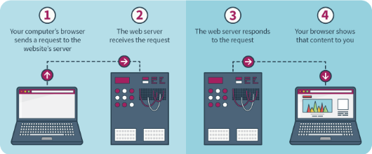

वेबसाईट कशी चालते हे समजण्यासाठी खालील गोष्टी समजणे खूप महत्वाचे आहे:
1. वेबसाईट काय असते? -> वेबसाईट हि टेक्स्ट(अक्षरे आणि शब्द), फोटो आणि व्हिडीओ या सर्वांचे मिळून बनलेली असते. ह्या सगळ्या गोष्टी एकत्र केलेल्या असतात त्या ठिकाणाला वेब पेज म्हणतात. अशा बऱ्याच पेजेस ची मिळून एक वेबसाईट बनलेली असते. प्रत्येक वेबसाईट ला स्वतःचा एक ऍड्रेस असतो, जसे कि फेसबुक चा ऍड्रेस www.facebook.com असा आहे. आणि त्यातील तुमचे प्रोफाइल पेज हे एक टेक्स्ट, फोटो आणि विडिओ असलेले एक पेज असते.
2. वेब ब्राऊजर: वेब ब्राउजर हे वेबसाईट पर्यंत पोहचण्यासाठी काम्पुटर वर इन्स्टॉल केलेले एक सॉफ्टवेयर असते. वेबसाईट चे पेजेस - त्यातले टेक्स्ट, फोटो, विडिओ हे सगळे युजर ला दाखवण्याचे काम वेब ब्राउजर करते. गुगल क्रोम, इंटरनेट एक्सप्लोरर, मोझिला फायरफॉक्स, ऑपेरा, UC वेब ब्राउजर हे सगळे वेब ब्राऊजर आहेत. ह्या सॉफ्टवेअर्स मध्ये जेव्हा तुम्ही वेबसाईट चा ऍड्रेस टाकता(e.g. www.facebook.com) तेव्हा हे ब्राउजर्स त्या ऍड्रेस वरून टेक्स्ट, फोटो असलेले पेजेस घेऊन आपल्याला दाखवतात.
3. HTML: HTML(HyperText Markup Language) हि संगणक भाषा(Computer Language) आहे. सगळ्या वेबसाईट चे पेजेस ह्या भाषेत लिहलेले असतात. ब्राऊजर वर दिसणारे टेक्स्ट, फोटो आणि विडिओ विशिष्ट फॉरमॅट मध्ये ठेवणे हे या भाषेचे काम असते.
4. वेब सर्वर: वेब सर्वर हे एक 24 तास चालू असणारे एक मोठे कॉम्पुटर असते. वेब सर्वर वर वेबसाईट चा सगळा डेटा(टेक्स्ट, फोटो आणि विडिओ) स्टोर केलेला असतो. याचे काम हा डेटा ब्राऊजर पर्यंत पोहचवणे हे असते.
आता ह्या चारही गोष्टी एकत्रित कशा काम करतात ते पाहू: जेव्हा तुम्ही वेब ब्राउजर मध्ये वेबसाईट चा ऍड्रेस(www.uttar.co) टाकता तेव्हा वेब ब्राऊजर तुमच्या फोन किंवा कॉम्पुटर वरील इंटरनेट वापरून वेब सर्वर ला एक रेक्वेस्ट करते. मग वेब सेर्वर इंटरनेट वरून तुमच्या फोन/कॉम्पुटर वर वेब पेजेस पाठवते.(जेव्हा ब्राउजर मध्ये लोडिंग... असे दिसते तेव्हा सेर्वर वरून पेज डाऊनलोड होत असते). हे वेब पेजेस HTML मध्ये असतात. मग वेब ब्राउजर या HTML ला एका विशिष्ट फॉरमॅट मध्ये आपल्या स्क्रीन वर दाखवते.
खालील चित्रात वेब ब्राऊजर ची रिक्वेस्ट आणि वेब सर्वर चा रिस्पॉन्स दिसत आहे: 